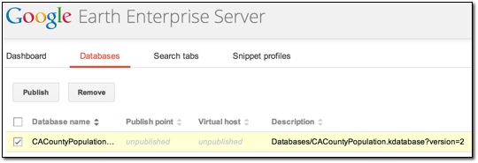
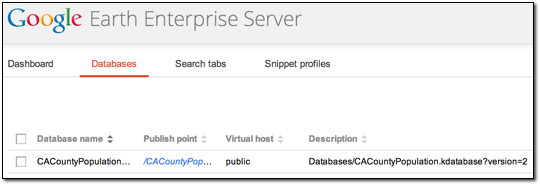
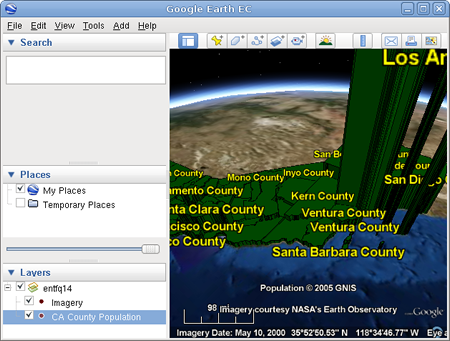

Configuring Display Rules for Polygon Data¶
You can use elevation, color, and text labels to distinguish the characteristics of polygon shapes in your data. This lesson guides you through the process of graphically distinguishing the population in each county in California using display rules.
- Define and Build a Vector Resource Using Polygon Data
- Define, Configure, and Build a Vector Project
- Define and Build an Imagery Project
- Define, Build, and Publish a Database for the Polygon Data
- View Your Database in Google Earth EC
Define and Build a Vector Resource Using Polygon Data
This exercise walks you through the process of defining and building a vector resource using US census data for the state of California organized by county.
To define and build a vector resource using polygon data:
Select Asset Manager from the Tools menu.
The Asset Manager appears.
Click on the toolbar.
The Vector Resource Editor appears.
Set the acquisition date to today’s date in year-month-day format by clicking each section of the date and entering the values.
Select GNIS/US Census Bureau from the Provider drop-down list.
Click Add.
The Open Source dialog appears.
Navigate to the
/opt/google/share/tutorials/fusion/Vectorfolder.Select the
cal_counties_census.shpfile, and click Open.The selected file appears on the Source File(s) list.
Select File > Save.
The Save dialog appears.
Navigate to the
/ASSET_ROOT/Resources/Vectorfolder you created in Setting Up the Tutorial.Enter the name CACountyPopulation for the resource, and click Save.
The name of the resource appears on the right when you select the
/ASSET_ROOT/Resources/Vectorfolder in the asset navigation tree.Right-click CACountyPopulation, and select Build from the context menu.
Google Earth Enterprise Fusion builds the resource.
Define, Configure, and Build a Vector Project
This exercise walks you through the process of defining, configuring, and building a vector project using the resource you created in the previous exercise.
To define and build a vector project and configure display rules for polygons:
Click on the toolbar. The Vector Project Editor appears.
Click
 .
.The Open dialog appears.
Navigate to the
ASSET_ROOT/Resources/Vectorfolder.Select CACountyPopulation, and click Open.
The CACountyPopulation resource appears in the Vector Project Editor.
Right-click CACountyPopulation, and select Configure Display Rules from the context menu.
The Display Rules dialog appears with the Feature tab in the foreground and the default select all rule highlighted.
Specify the geometry characteristics of the polygons (in this case, the counties):
For Draw Features As, select Polygons.
For Visibility, accept the default range, 4 through 24.
For Maximum Simplification Error, accept the default setting, 0.5.
Under Draw Style, set:
Mode to Outlined and Filled.
Fill Color to medium green.
Tip
When you set fill color, specify a value of 125 for the alpha channel instead of 255. This makes the fill color semi-transparent instead of opaque.
Outline Color to black.
Outline Width to 1.
The result of these settings is that Google Earth EC displays each county as a semi-transparent green polygon with a black outline.
Under Elevation/Height, set:
- Mode to Relative.
- Check the box next to Extrude.
- Check the box next to User-Defined Height.
- Height Variable to POP2000. (Click the empty text field, select POP2000 from Insert Field the drop-down list, and click OK.)
- Offset to 0.
- Scale to 0.05.
The result of these settings is that Google Earth EC displays each county at an elevation relative to its population. That is, counties with higher population appear taller. Counties with lower population appear shorter. (Refer to the Google Earth Enterprise Fusion Reference Guide for complete details about each of the settings in this dialog.)
On the right side of the dialog, check the box next to Draw Label.
This allows you to specify the content of a text label for each county.
For Visibility, set the range to 4 through 24.
Under Label Properties, select Text from the drop-down list, and then click the empty text field.
The Format Label dialog appears.
Select COUNTY from the Insert Field drop-down list, and click OK.
For Highlight, set:
- Color to pale yellow.
- Scale to 1.
The result of these settings is that Google Earth EC displays each county’s name in bright yellow text. Each text label is centered within its county
For Normal, set:
- Color to bright yellow.
- Scale to 1.
Click OK.
You return to the Vector Project Editor.
Select File > Save.
The Save dialog appears.
Navigate to the
ASSET_ROOT/Projects/Vectorfolder.Enter CACountyPopulation as the name of your project, and click Save.
Note
Although this is the same name as the resource, Google Earth Enterprise Fusion allows it, because they are different asset types and, therefore, have different file name extensions. In addition, they are being stored in different folders.
The new project appears in the Asset Manager when you select ASSET_ROOT/Projects/Vector in the asset navigation tree.
Right-click CACountyPopulation, and select Build from the context menu.
Google Earth Enterprise Fusion builds the project.
Define and Build an Imagery Project
Although you can build, push, and publish a database that includes
a vector project only, you cannot connect directly to your server
with Google Earth EC to view that data unless your database also
includes an imagery project. If you publish a database that
includes a vector project only, you must use the Add Database
command on the File menu in Google Earth EC to add the database to
the base imagery after logging in to kh.google.com or
another server that serves a database that includes imagery.
This exercise walks you through the process of defining and building an imagery project using a resource you created in Defining and Building Resources. Since the focus of this lesson is on polygon display rules, it is not desirable to spend a lot of time building a large imagery project. So this exercise walks you through creating a small and simple imagery project.
Note
If you have already completed this exercise in Configuring Display Rules for Point Data, skip this exercise and move on to Define, Build, Push, and Publish a Database for the Polygon Data.
To define and build an imagery project:
Click
 on the toolbar.
on the toolbar.The Imagery Project Editor appears.
Accept all of the default values in the Legend area. (Refer to the Google Earth Enterprise Fusion Reference Guide for details about these settings.)
Click
.The Open dialog appears.
Navigate to the
ASSET_ROOT/Resources/Imageryfolder.- Select BlueMarble and click Open.
The BlueMarble resource appears in the Imagery Project Editor.
Select File > Save.
The Save dialog appears.
Navigate to the
ASSET_ROOT/Projects/Imageryfolder.Enter BlueMarble as the name of your project and click Save.
The new project appears in the Asset Manager when you select ASSET_ROOT/Projects/Imagery in the asset navigation tree.
Right-click BlueMarble and select Build from the context menu.
Google Earth Enterprise Fusion builds the project.
Define, Build, and Publish a Database for the Polygon Data
This exercise walks you through the process of defining, building, and publishing a database using the projects you created in the previous exercise.
To define, build, and push a database:
Click
 on the toolbar.
on the toolbar.The Database Editor appears with no projects selected.
Click
next to Vector Project.The Open dialog appears.
Navigate to
ASSET_ROOT/Projects/Vector.Select the CACountyPopulation project, and click Open.
The CACountyPopulation project appears in the Database Editor next to Vector Project.
Repeat steps 2 through 4 to add BlueMarble as the imagery project.
You do not need to add a terrain project for this exercise. Both projects appear on the list.
Select File > Save.
The Save dialog appears.
Navigate to the
ASSET_ROOT/Databasesfolder.Enter CACountyPopulation for the name of your database and click Save.
The name of the database appears on the right when you select the
/ASSET_ROOT/Databasesfolder in the asset navigation tree.Right-click CACountyPopulation and select Build from the context menu.
Google Earth Enterprise Fusion builds the database.
Right-click CACountyPopulation and select Push from the context menu.
The Push Database dialog appears.
Select the server association on the Server Associations drop-down list. The most recent version of the selected database is the default selection on the Version drop-down list.
Click Push.
Google Earth Enterprise Fusion runs the process of pushing the database to the Google Earth Enterprise Server, and displays a success message when it is done.
To publish a database:
Access the Google Earth Enterprise Server Admin console in a browser window by going to myserver.mydomainname.com/admin, replacing myserver and mydomainname with your server and domain.
Sign in with the default credentials:
- Username: geapacheuser
- Password: geeadmin
Click Databases to display the list of databases pushed to the Server.
Check the box next to the database you want to publish. The Publish button on the Databases page appears.

Click Publish. The Publish dialog appears.
Specify a Publish point, where the database will be accessible from. For example, if you specify CACountyPopulation-v001, it will be accessible from myserver.mydomainname.com/CACountyPopulation-v001.
To learn more about the options available in the Publish dialog, see
Click the Publish button. The Databases page updates to indicate the published status of your database.

View Your Database in Google Earth EC
This exercise walks you through the process of viewing your database in Google Earth EC.
To view your database:
Launch Google Earth EC. The Select Server dialog appears.
Enter or select the host name or IP address of your server in the Server field and specify the Publish point that you selected when you published your map database. For example, if you specify CACountyPopulation-v001, it will be accessible from myserver.mydomainname.com/CACountyPopulation-v001.
Click the Sign In button.
Warning
If you have logged in to this server with Google Earth EC previously, log out, clear your cache, and log back in. See Clearing the Google Earth EC cache.
Zoom in to the west coast of the US.
Google Earth EC displays all of the counties in California labeled with the names of the counties. The closer you zoom in, the more spread out the counties look and the more county names you can see.
Note
If you cannot see the vector data, make sure the checkbox next to CACountyPopulation in the Layers panel is checked.
Turn and tilt the Earth so you can see the heights of the counties.
Each county’s height indicates its relative population. Counties with higher populations are taller, and counties with lower populations are shorter.
